Plan wycieczki
Zwiedzone miejsca
- Kopacki Rit (Chorwacja)
- Sarajewo (Bośnia i Hercegowina)
- Tjentište spomenik
- Dragos Sedlo i wodospad
- Monaster Ostrog (Czarnogóra)
- Podgorica
- most Mesi (Albania)
- zamek Rozafy
- Bigorski monaster św. Jana Chrzciciela (Północna Macedonia)
- Old Mavrovo Church
- Skopje
- Saloniki (Grecja)
- Meteory
- Ateny
- Teatr w Epidauros oraz sanktuarium Asklepiosa
- Nauplion
- Mykeny
- Delfy
- Syri i Kaltër (Albania)
- Berat
- Tirana
- Wyspa Sveti Stefan (Czarnogóra)
- Kotor
- Catholic monastery of Saint George
- Herceg Novi
- Dubrovnik
- Park Narodowy rzeki Krka
- Jeziora Plitwickie
- Zagrzeb
Czas wycieczki: 16 dni
Skład osobowy: 2 dorosłych, 2 dzieciaki
Przejechane kilometry: 5,5 tysiąca
Punkt początkowy i końcowy: Kraków
Celem wycieczki było zobaczenie niezwiedzonych krajów na półwyspie Bałkańskim. Ponieważ tym razem podróżowaliśmy sami z dzieciakami (2 i 5 lat) postawiliśmy na trochę wolniejsze tempo zwiedzania i późniejsze pobudki. Żeby wybrać się w podobną podróż samochodem, będziecie potrzebowali zielonej karty, która jest wymagana w Albanii czy Północnej Macedonii. Pamiętajcie również o wyłączeniu danych komórkowych czy roamingu zagranicznego w przypadku Bośni, Czarnogóry, Albanii czy Macedonii - te kraje są po za Unią Europejską i koszty połączeń czy transferu są horrendalnie wysokie. Można skorzystać z lokalnych starterów jak Vodafone lub tak jak my pobrać mapy google'a i używać ich w wersji offline. Jeśli jadąc przez Słowację i Węgry chcecie skorzystać z autostrad, pamiętajcie o kupieniu winiet. Można to zrobić online: eznamka.sk/pl i ematrica.nemzetiutdij.hu/
Plan wycieczki
Szczegóły planu
Dzień pierwszy
- 16:00 - wyjazd z Myślenic
- 20:00 - nocleg Želiezovce, Słowacja
Dzień drugi
- 9:00 - wyjazd
- 13:00 - Kopacki Rit
- 21:00 - nocleg w Sarajewie
Dzień trzeci
- 9:00 - zwiedzanie Sarajewa
- 16:00 - park Sutjeska
- 20:30 - nocleg w Nikole Đurkovića, Czarnogóra
Dzień czwarty
- 09:00 - wyjazd
- 10:00 - Monaster Ostrog, zwiedzanie do 12:00
- 13:00 - przyjazd do Podgorica, zwiedzanie + obiad do 15:30
- 17:00 - przyjazd do mostu Mesi, zwiedzanie do 17:30
- 18:00 - przyjazd do ruin zamku Rozafa, zwiedzanie do 19:00
- 22:00 - nocleg w Bulqizë, Albania
Dzień piąty
- 9:00 - wyjazd
- 10:00 - przyjazd do Bigorski monaster św. Jana Chrzciciela, zwiedzanie do 10:30
- 11:30 - przyjazd do Old Mavrovo Church, zwiedzanie do 12:00
- 13:30 - przyjazd do Skopje, zwiedzanie + nocleg
Dzień szósty
- 9:00 - wyjazd
- 13:00 (zmiana strefy!) - przyjazd do Salonik, zwiedzanie do 17:00
- 20:00 - nocleg w Kalabaka, Grecja
Dzień siódmy
- 9:00 - wyjazd
- 9:30 - przyjazd do Monastyr Świętej Trójcy, Kalampaka, zwiedzanie do 12:30
- 14:00 - przyjazd na plażę Παραλία Καλάμου, obiad, przerwa do 16:00
- 18:00 - przyjazd do Aten, nocleg
Dzień ósmy
- cały dzień w Atenach, wyjazd o 19:00
- 20:00 - nocleg w Agios Ioannis Korinthias, Grecja
Dzień dziewiąty
- 9:00 - wyjazd
- 10:00 - przyjazd do Teatr w Epidauros, zwiedzanie do 11:00
- 11:30 - przyjazd do Nauplionu, zwiedzanie do 16:00
- 16:30 - przyjazd do Myken, zwiedzanie do 19:30
- 20:00 - nocleg w Agios Ioannis Korinthias, Grecja
Dzień dziesiąty
- 9:00 - wyjazd
- 11:30 - przyjazd do Osios Lucas, zwiedzanie do 13:30
- 14:30 - przyjazd do Delf, zwiedzanie do 17:00
- 19:30 - nocleg w Eleftheriou Venizelou, Agrinio
Dzień jedenasty
- 9:00 - wyjazd
- 11:30 (zmiana czasu!) - przyjazd do Butrint, zwiedzanie do 13:00
- 14:00 - przyjazd do Syri i Kaltër, zwiedzanie do 16:00
- 19:00 - przyjazd do Berat, nocleg
Dzień dwunasty
- 9:00 - zwiedzanie Berat do 12:00
- 14:00 - przyjazd do Tirany, zwiedzanie do 17:00
- 18:00 - nocleg w Shëngjin
Dzień trzynasty
- 9:00 - wyjście na plażę, plażing do 12:00
- 15:00 - przyjazd Kotoru, zwiedzanie do 18:00
- 19:00 - przyjazd do Herceg Novi, nocleg w Kuti - Katun Savovića 85346 Herceg Novi
Dzień czternasty
- 9:00 - zwiedzanie do 13:00
- 14:00 - przyjazd od Dubrovnik, zwiedzanie i nocleg
Dzień piętnasty
- 9:00 - wyjazd
- 12:00 - przyjazd do wodospadów Kravica, zwiedzanie do 15:00
- 17:00 - przyjazd do Skradinski Buk, zwiedzanie do 19:00
- 19:30 - nocleg w Skradin
Dzień szesnasty
- 9:00 - wyjazd
- 11:00 - przyjazd do jezior Plitwickich, zwiedzanie do 14:00
- 17:00 - przyjazd do Zagreb
Dzień siedemnasty
- 8:00 - zwiedzanie i powrót do domu
Plan wycieczki
Trasa
Zwiedzanie
KOPACKI RIT, SARAJEWO I PARK SUTJESKA
Zwiedzanie zaczęliśmy w parku Kopacki Rit, gdzie przepłyneliśmy łódką po jeziorze. Oprócz czapli czy kormoranów mieliśmy bardzo dużo szczęścia, bo udało nam się wypatrzyć kilka zimorodków czy polującego orła. Prosto z parku pojechaliśmy do pierwszego miasta na naszej liście czyli Sarajewa. Samochód zostawiliśmy na parkingu Garaža sa naplatom "Stari grad" (można tam zapłacić tylko gotówką w lokalnej walucie). Spod ratuszu przeszliśmy do targu Baščaršija z charakterystyczną studzienką Sebilj. Pokluczyliśmy trochę pobliskimi uliczkami, mineliśmy meczet Baščaršija i ruszylismy w kierunku kolejki, która zawiozła nas na szczyt wzgórza Trebević. Tam znajduje się opuszczony i zniszczony tor bobslejowy - czyli to, co interesowało nas tutaj najbardziej. Spowity w mgle robi niesamowite wrażenie. Nasz ostatni punkt w Bośni i Hercegowinie to Park Sutjeska a w nim dwa miejsca: pierwsze to pomnik upamiętniający stoczoną podczas II wojny światowej Bitwę nad Sutjeską a drugi to Dragos Sedlo, z którego krótka trasa doprowadziła nas do punktu widokowego, z którego widać wodospad Skakavac. Żeby dojechać do tego miejsca należy opłacić wjazd do parku, nie zdziwcie się stanem drogi, która momentami z asfaltowej zmienia się w bardziej leśną, z większą ilością dziur niż dobrej nawierzchni.
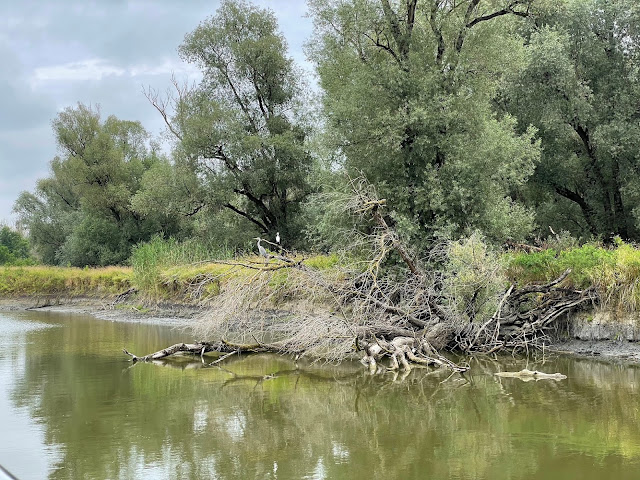
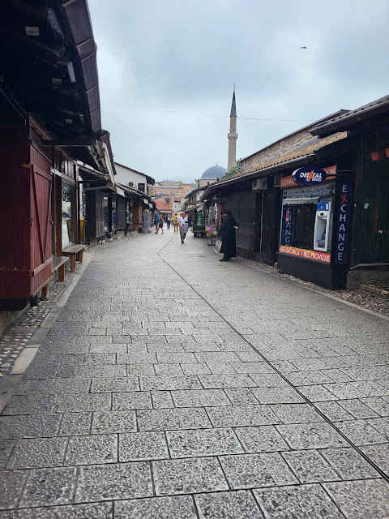
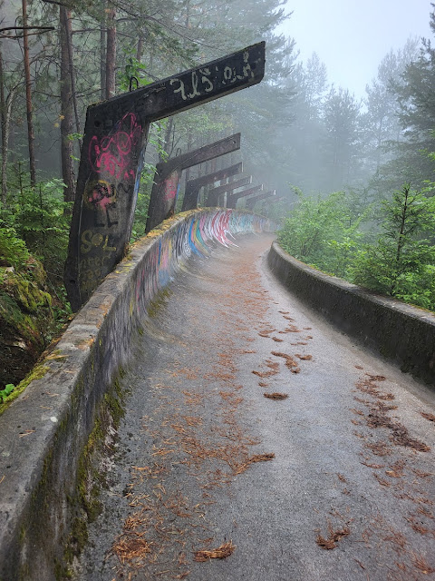
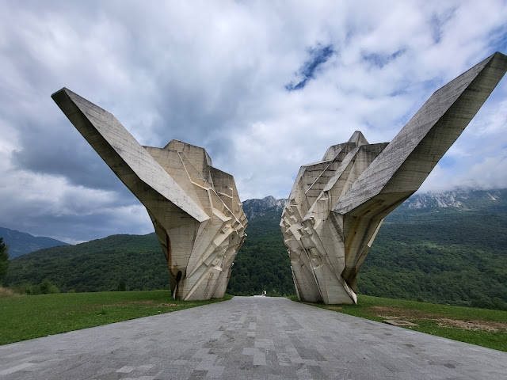
Zwiedzanie
MONASTER OSTROG, PODGORICA, MOST MESI I ZAMEK ROZAFY
Wizytę w Czarnogórze zaczęliśmy od odwiedzenia wykutego w skale klasztoru. Można dojechać samochodem całkiem wysoko, parking jest bezpłatny i czeka Was jeszcze tylko kilka podejść schodami w górę. Oprócz klasztoru można tutaj również podziwiać wspaniałą panoramę rozciągającą się z dziedzińca. Potem ruszyliśmy do Podgoricy, gdzie zobaczyliśmy wieżę zegarową i spacerując uliczkami starego miasta, wśród domków ocalałych z trzęsienia ziemi, wróciliśmy do samochodu. A potem wyruszyliśmy w kierunku Albanii. W tym kraju trzeba uzbroić się w duże pokłady cierpliwości oraz ciągłe skupienie na drodze, ponieważ lokalsi mają bardzo luźne podejście do przepisów ruchu drogowego. Miejsca, które zdecydowaliśmy się tutaj zobaczyć to most Mesi, czyli jeden z jedną z najlepiej zachowanych na Bałkanach tureckich przepraw przez rzekę. W tej okolicy znajduje się również zamek Rozafy, który po za udostępnionym do zwiedzania wnętrzem cieszy oczy rozległym widokiem na Szkodrę oraz okoliczne miejscowości. Obok zamku znajduje się mały parking, więc jeśli będziecie mieli szczęście, to uda Wam sie zaparkować zaraz obok kasy biletowej.
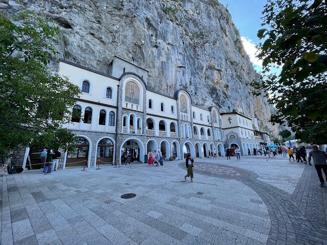
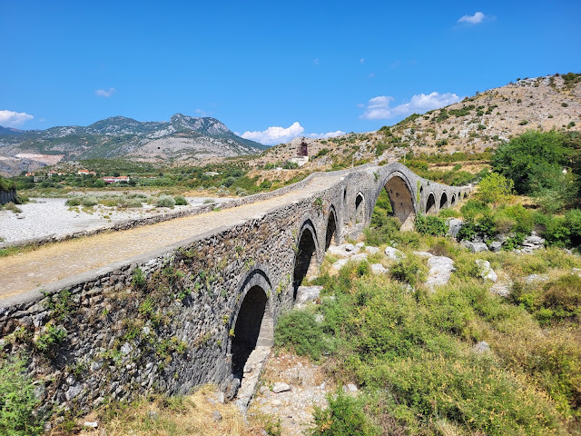
Zwiedzanie
BIGORSKI MONASTER ŚW. JANA CHRZCICIELA, OLD MAVRORO CHURCH I SKOPJE
Miasto przywitało nas zakorkowaną autostradą i lekkim deszczem, ale zanim zdążyliśmy się rozpakować w mieszkaniu, po jednym i drugim nie było ani śladu. W związku z tym wybraliśmy się na spacer po starym mieście i zobaczyliśmy najbardziej charakterystyczne dla miasta miejsca, takie jak zamek Buonconsiglio, Piazza Duomo, kilka kościołów i skończyliśmy przy pomniku Dantego. Nocowaliśmy w Albiano, miasteczku położonym dość wysoko, kilka kilometrów od Trydentu, i poranek powitał nas przepięknym widokiem na góry.
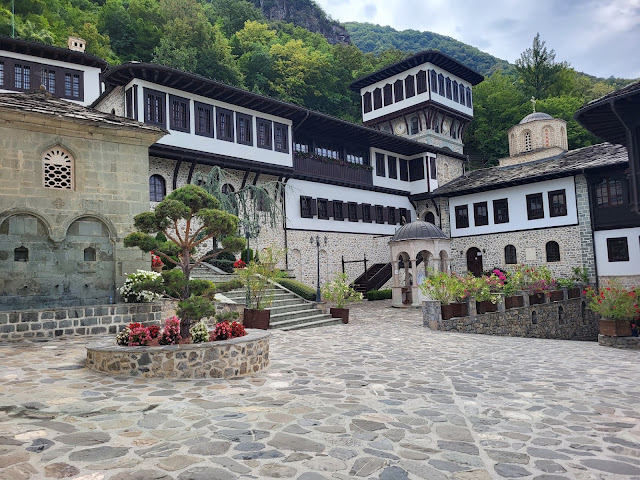
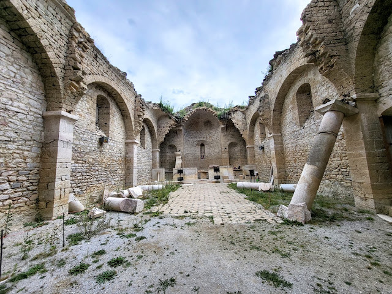
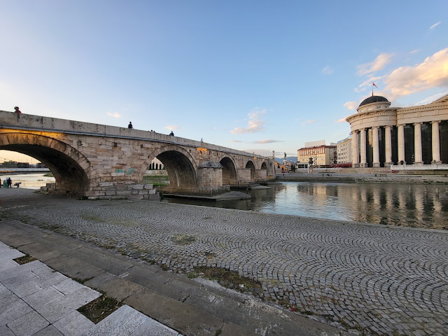
Zwiedzanie
SALONIKI, METEORY
Docieramy do ostatniego państwa na naszej liście "bałkańskiego todo" - słonecznej Grecji. Samochód zostawiliśmy na zautomatyzowanym parkingu Central Parking YMCA i potem poszliśmy się przywitać z Aleksandrem Macedońskim, zobaczyliśmy Białą Wieżę i przespacerowaliśmy się do łuku triumfalnego Galeriusa i Rotondy a następnie dotarliśmy do starożytnej agory i znajdującego się obok parku. Ponieważ pogoda okazała się nieco zbyt słoneczna, wyruszyliśmy w kierunku miejsca, które było moim głównym celem całej wycieczki: Meteory, czyli klasztory na skalnych słupach. Z samego rana pojawiliśmy się na parkingu przy Megalo Meteoro i to była bardzo dobra decyzja - jeśli przyjedziecie trochę później to nie dość, że będzie ciężko zaparkować to dodatkowo utkniecie w sporej kolejce do wejścia. Po zwiedzeniu klasztoru zatrzymaliśmy się jeszcze w kilku punktach widokowych. Ciężko było mi się pożegnać z tym miejscem, bo zrobiło na mnie dokładnie takie wrażenie, jakiego się spodziewałam.
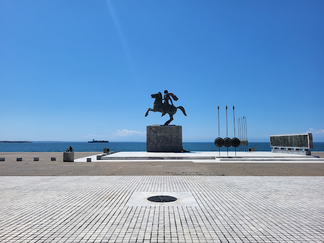
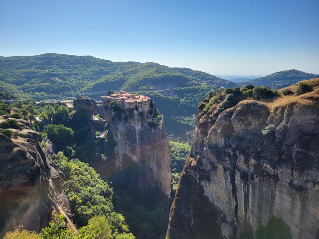
Zwiedzanie
ATENY, EPIDAUROS I NAUPLION
Stolicja Grecji przywitała nas przepiękną pogodą. Spędziliśmy tutaj popołudnie i połowę kolejnego dnia. Popołudnie poświęciliśmy na spokojny spacer do Ogrodu Narodowego w towarzystwie papug, gęsi i żółwi. Odwiedziliśmy także Zappeion oraz stadion Kallimarmaro - ten ostatni robi niesamowite wrażenie. Z samego rana, żeby uniknąć największych tłumów wybraliśmy się na akropol. Samochód zostawiliśmy w Kekropos 5-7 Garage. Zdecydowaliśmy się na kupno łączonego biletu na różne atrakcje tutaj: etickets.tap.gr. Wspięcie się na szczyt wzgórza zajęło nam chwilę, bo co krok można było zobaczyć coś ciekawego. Wolnym krokiem przeszliśmy przez Propyleje (nie dało się szybciej, bo tłum gęstniał dosłownie z każdą minutą) i udaliśmy się na obchód wszystkich zabytków. Miejsce jest piękne, ale szczerze mówiąc ilość ludzi odbierała mi trochę radość ze zwiedzania, więc bez żalu ruszyliśmy dalej, do kolejnych miejsc i przede wszystkim do cienia, ponieważ temperatura zaczynała powoli dochodzić do 40 stopni. Kolejne miejsca do Rzymska Agora, Biblioteka Hadriana, Grecka Agora ze świątynią Hefajstosa. Ostatnie dwa punkty na naszej trasie to Łuk Hadriana oraz ruiny świątyni Zeusa. Kolejnego dnia pojechaliśmy zobaczyć kompleks archeologiczny w Epidauros. Znajduje się tam fantystycznie zachowany antyczny teatr oraz ruiny dawnego kompleksu poświeconego Asklepiosowi czyli greckiemu bogu zdrowia. Na koniec dnia odwiedziliśmy jeszcze Nauplion, jednak tutaj zrezygnowaliśmy ze zwiedzania zamku na rzecz spaceru wzdłuż promenady a następnie wąskimi uliczkami starego miasta.
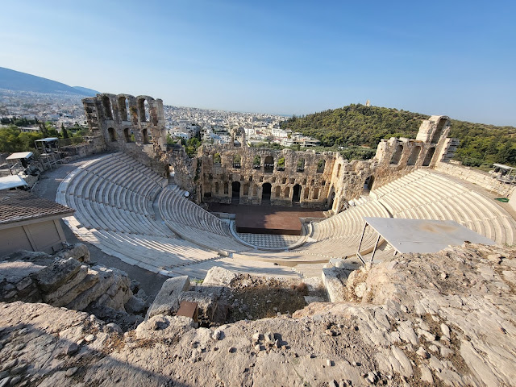
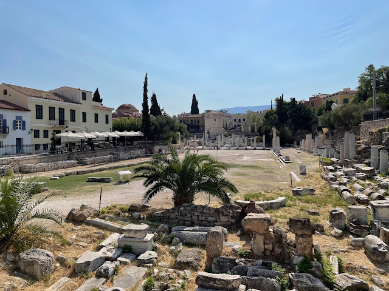
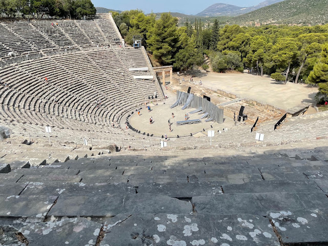
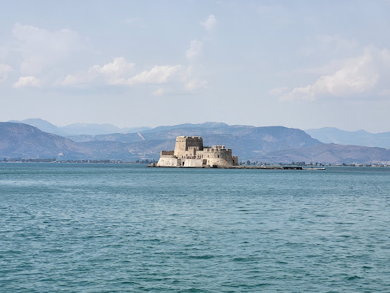
Zwiedzanie
MYKENY I DELFY
Kolejne dni przyniosły nam jeszcze więcej antycznej rzeczywistości. Mykeny i Delfy to zdecydowanie dwa moje ulubione miejsca pod tym względem. Nieco większe wrażenie zrobiły na mnie Delfy, ale zdecydowanym plusem w obydwóch przypadkach był fakt, że nie spotkaliśmy tutaj tłumu turystów co pozwoliło na swobodne zwiedzanie. Nie oglądałam wcześniej zdjęć z tych miejsc, więc Delfy zaskoczyły mnie również swoją skalą. W przypadku Myken pamiętajcie, że bilet uprawnia nie tylko do wejścia na teren antyczneo miasta ale także do ruin skarbca Arteusza. Jeśli chodzi o Delfy, dodatkowo można zwiedzić Muzeum Archeologiczne, gdzie znajdują się eksponaty znalezione wyłącznie na pobliskim stanowisku archeologicznym.
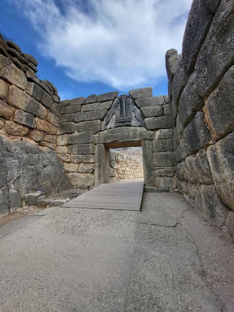
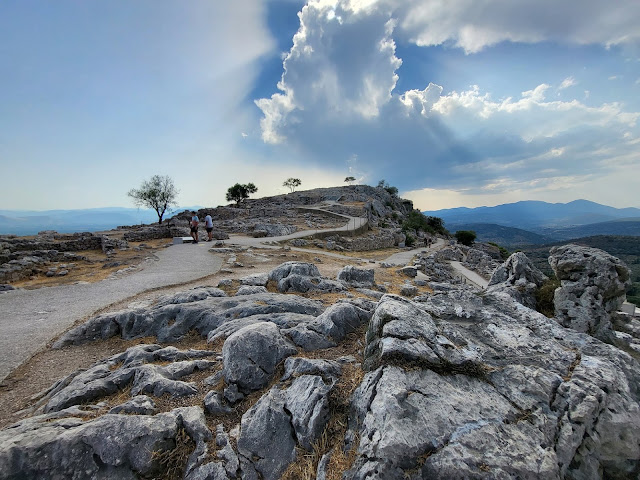
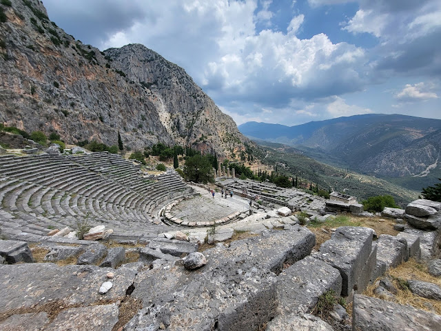
Zwiedzanie
SYRI I KALTER, BERAT I TIRANA
Wracamy do Albanii. Na początku w naszym planie mieliśmy również zobaczenie ruin starożytneo miasta w Parku Narodowym w Butrint, ale kiedy zobaczyliśmy jakie tłumy tam wchodzą, jak i również przez fakt, że jednak już trochę ruin się naoglądaliśmy podczas tej wycieczki, pojechaliśmy prosto do Syri i Kaltër. Znajduje się tam błękitne oko Albanii czyli źródło rzeki Bystrzyca. Nieco dalej od źródła można się wykąpać, ale trzeba wziąć pod uwagę, że woda jest tutaj bardzo zimna (tylko 10 stopni). Dwa ostatnie punkty na naszej trasie to miasto tysiąca okien: Berat oraz stolica Tirana. Rano poszliśmy odwiedzić zamek a właściwie miasteczko na szczycie z ruinami cytadeli. Potem dotarliśmy do Tirany, zostawiliśmy samochód w Skanderbeg Square Underground Parking i ruszyliśmy z placu w stronę pozostałych zabytków. Całe zwiedzanie nie zajęło nam dużo czasu, ale chyba byliśmy już trochę zmęczeni poruszaniem się samochodem po tym mieście, ponieważ nie jest to najłatwiejsze zadanie.
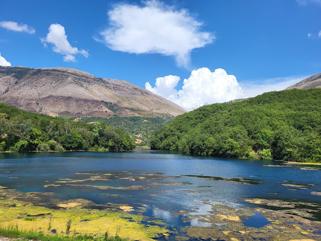
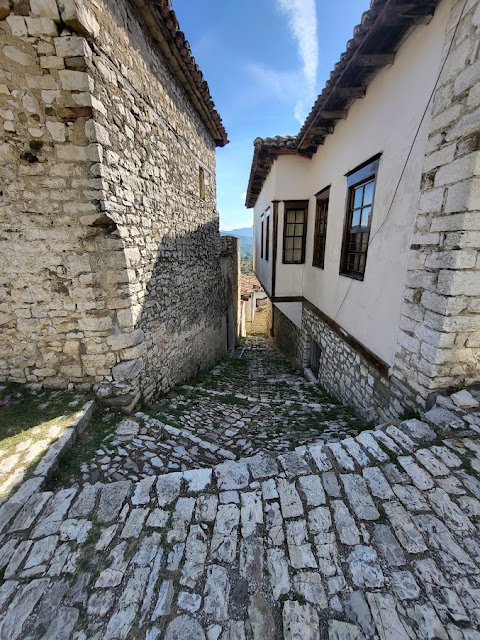
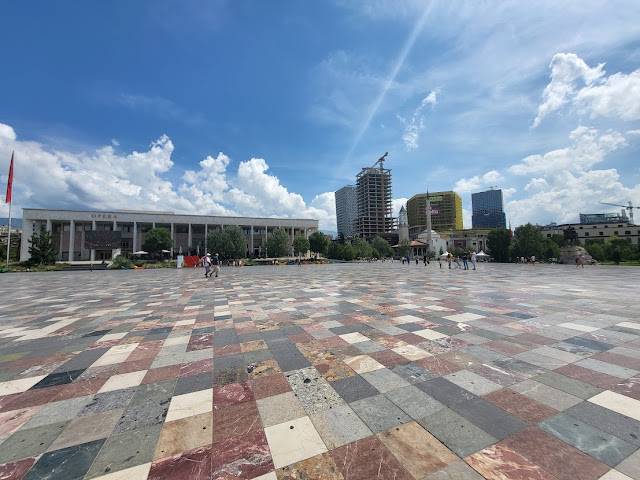
Zwiedzanie
KOTOR, HERCEG NOVI I DUBROVNIK
Po raz kolejny wjeżdżamy do Czarnogóry i zmierzamy do Kotoru. Po drodze jednak zatrzymaliśmy się w dwóch miejscach: przy 2000 letnim drzewku oliwnym oraz na punkcie widokowym z widokiem na podobno najbardziej elitarny hotel w Czarnogórze: wyspą św. Stefana. Trzy kolejne miasta, które odwiedziliśmy: Kotor, Herceg Novi i Dubrovnik łączy moim zdaniem bardzo dużo. Starówki są otoczone murami, mają bardzo klimatyczne uliczki no i wspaniały klimat. W Dubrovniku musicie liczyć się z naprawdę sporymi cenami za parkowanie i zwiedzanie murów.
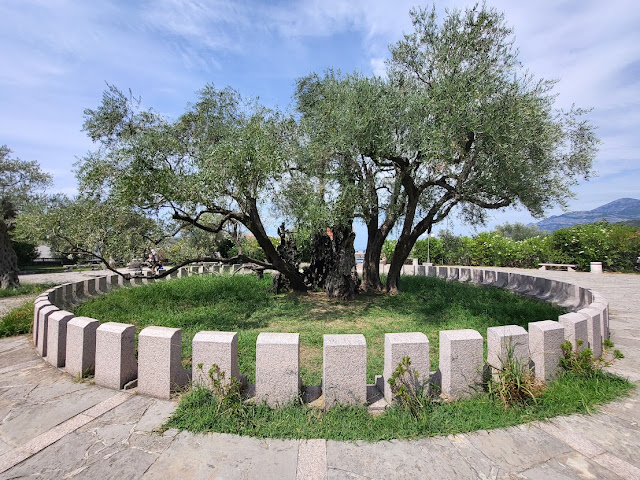
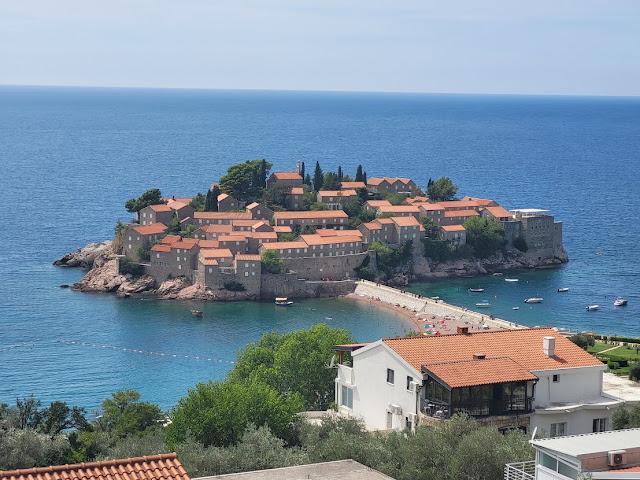
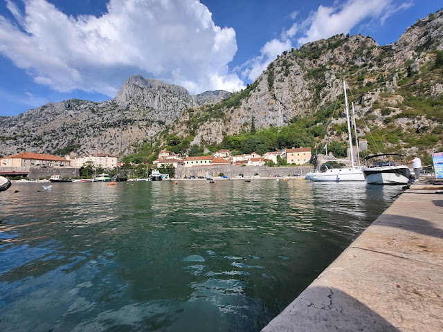
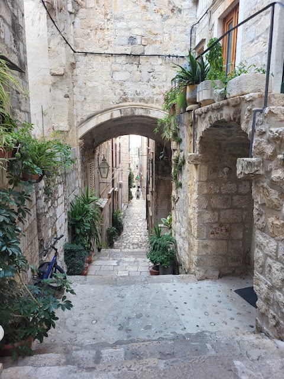
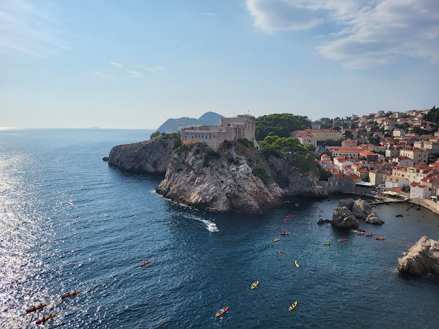
Zwiedzanie
PARK NARODOWY RZEKI KRKA, JEZIORA PLITWICKIE I ZAGRZEB
Jesteśmy z powrotem w Chorwacji i w przerwie podczas drogi do Parku Narodowego rzeki Krka zatrzymaliśmy się na Plaža Lučica. Cisza, spokój, po za nami tylko kilka osób i po dwóch godzinach trochę żałowaliśmy, że musimy już jechać dalej. W parku udało nam się złapać ostatnią łódkę odpływającą w kierunku wodospadów, jeśli nie chciecie płynąć łódką to czeka Was 4km spacer brzegiem rzeki. Ale niezależnie od tego w jaki sposób dostaniecie się na miejsce - warto. To jeden z lepszych parków, które miałam okazję zobaczyć. Zwłaszcza w porównaniu z jeziorami Plitwickimi, które zobaczyliśmy kolejnego dnia. Bilety kupiliśmy online ticketing.np-plitvicka-jezera.hr. Jeziora i wodospady są bardzo ładne, ale w mojej ocenie park Krka wypada dużo lepiej. Z opóźnieniem spowodowanym załamaniem pogody dojechaliśmy do ostatniego miejsca - stolicy Chorwacji. Planowaliśmy wieczorne zwiedzanie miasta ale niestety było już na to za późno, więc z samego rana wybraliśmy się na krótki spacer pomiędzy Katedrą Wniebowzięcia Najświętszej Maryi Panny, kościołem św. Marka, wieżą Lotrščak aż do placu bana Josipa Jelačića. Zostało nam tu jeszcze sporo do zobaczenia, ale na szczęście Zagrzeb jest całkiem niedaleko od nas, więc liczę na to, że jeszcze tu wrócimy.
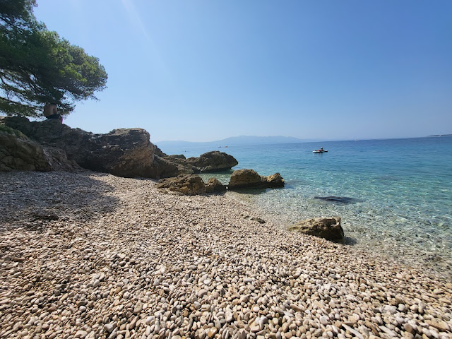
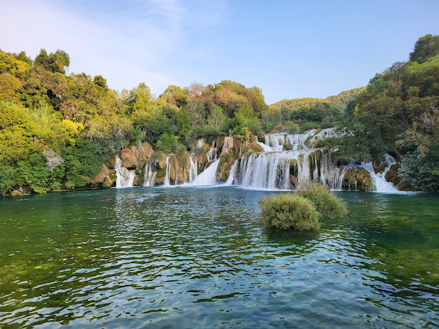
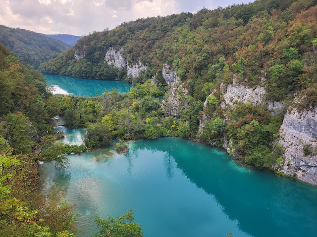
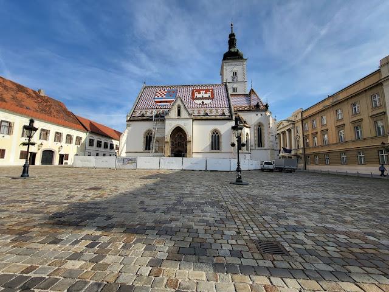